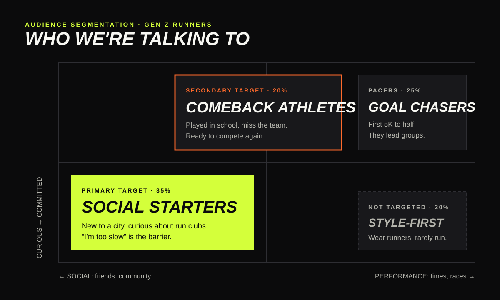
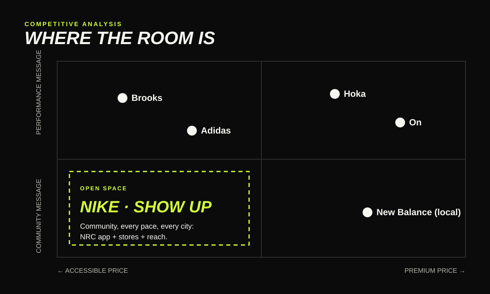
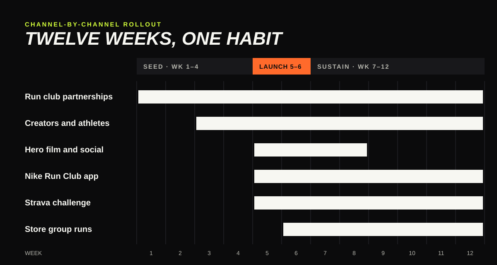

Nike · Campaign concept
Show Up
The hardest part of running isn’t the miles. It’s showing up the first time. A campaign that makes Nike the brand of the run club, with the Pegasus as the shoe for every pace in the group.
- Gen Z runners, 18–27
- 60 run clubs, 10 cities
- 12-week rollout
- Hero product: Pegasus
01 · Campaign brief
Running got social. The brands didn’t.
Challengers won runners with product stories. New runners are choosing clubs before they choose shoes, and nobody owns the club.
+59%
Run club participation
Strava’s 2024 Year in Sport report.
66%
Of Gen Z made friends
Through a fitness group in 2024, per Strava.
+29%
On’s 2024 sales growth
Hoka grew about 24% in fiscal 2025. Both lead with product.
02 · Audience segmentation
Talk to the runners who haven’t picked a brand yet.
Social Starters join for friends, not finish times. Comeback Athletes miss the team they had in school. Goal Chasers become the pacers who welcome both.

03 · Competitive analysis
Don’t fight on foam.
Hoka and On own the premium performance story. The community side, at a price everyone in the group can afford, is open nationally, and only Nike has the app, the stores and the reach to fill it everywhere at once.

04 · Channel-by-channel rollout
Twelve weeks, one habit.
Seed the clubs first, launch the film second, then turn one run into three. The funnel is simple: saw it, found a run, showed up, came back.

| Objective | Measure | Target |
|---|---|---|
| Recruit new runners | New NRC members aged 18–24 | +25% |
| Own the run club | Share of voice in #runclub content | #1 |
| Sell the everyday shoe | Pegasus sales to 18–24s, US | +15% |
| Build the habit | Members with 3+ group runs in 60 days | 35% |
The full concept
Read the documents
Sources, assumptions and the reasoning behind every choice are on GitHub.